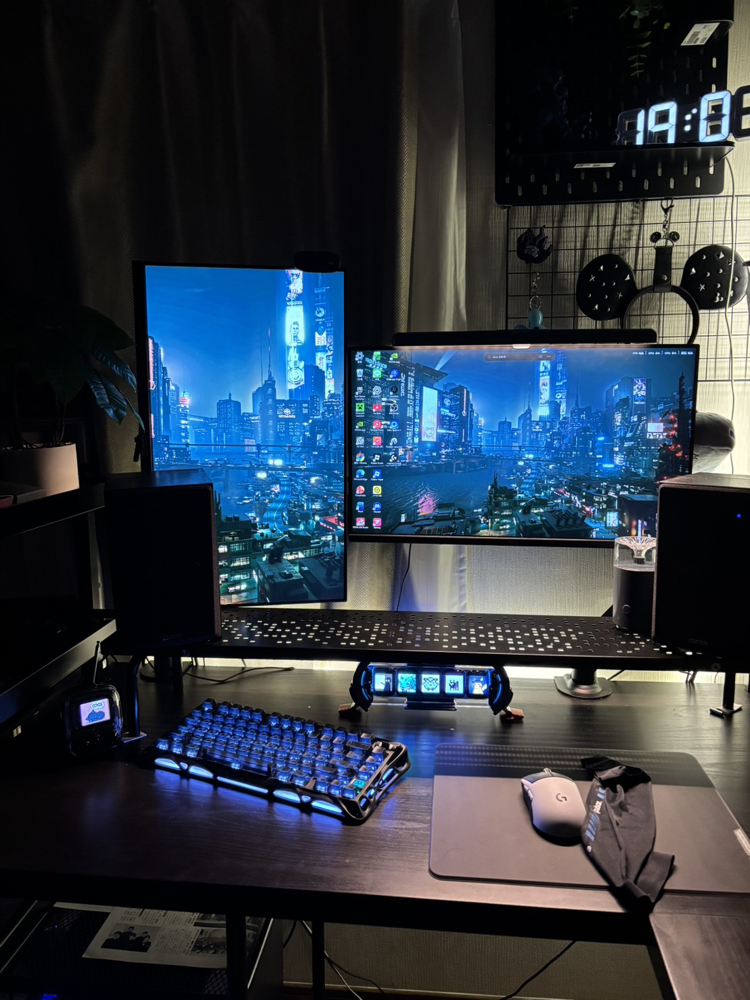
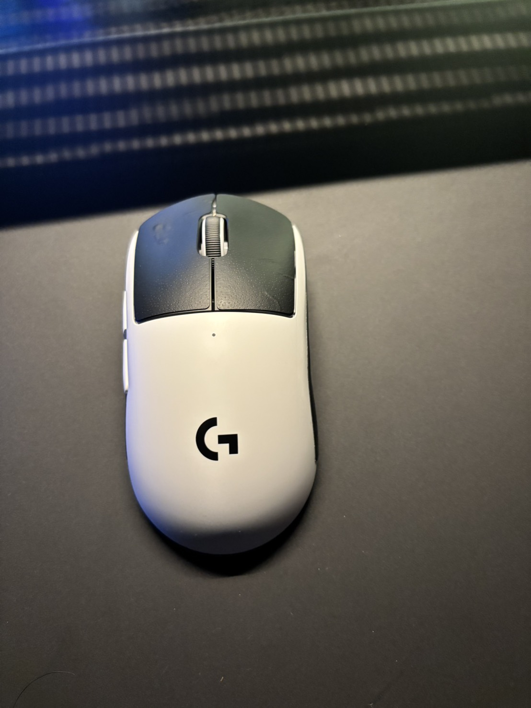
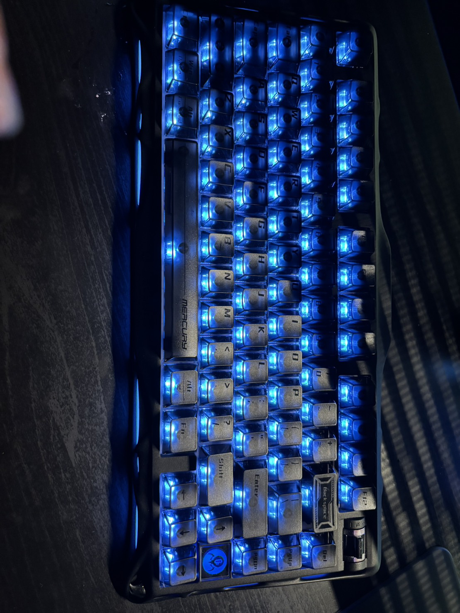
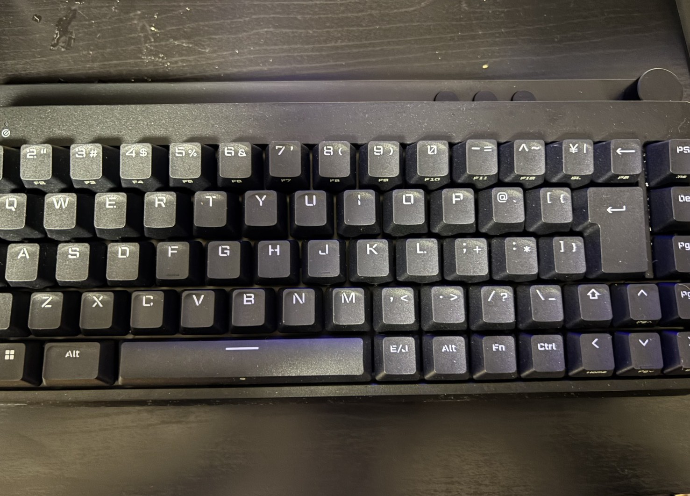
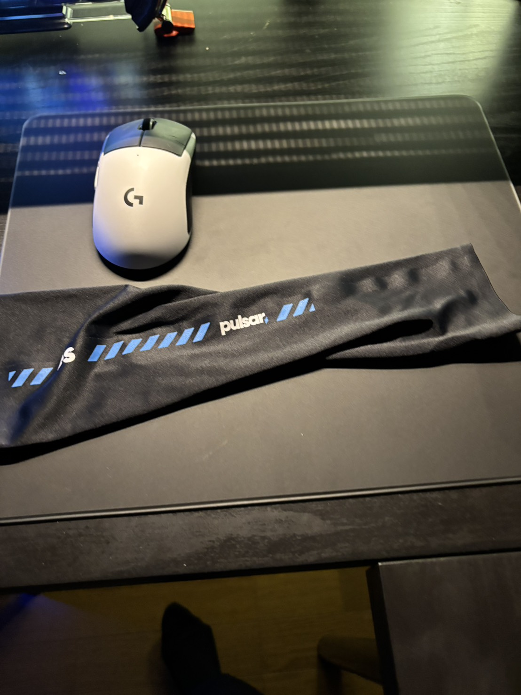
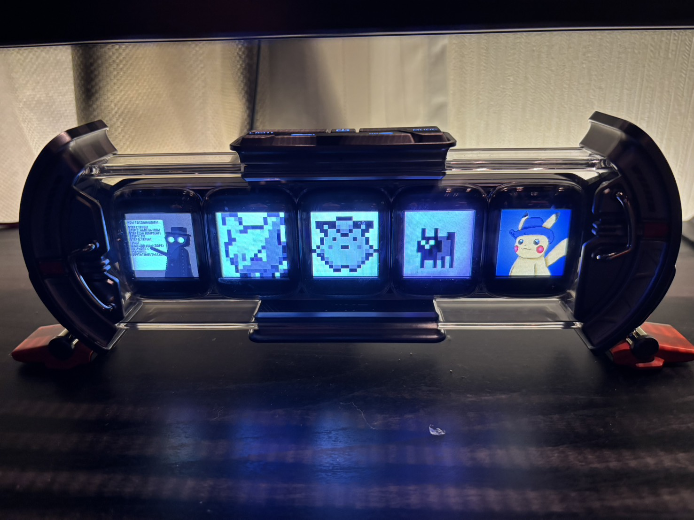

【デスクツアー】中学生のPCデスク格差がエグいw 総額12万の神環境 vs 2mで格闘する僕
どうもみなさんこんにちはnyakorです。今回の記事は自分のデスクと友達の総額12万の神環境を比べてみました。世の中には、中学生でもこんなデスクを持っている奴がいるのか……。 ということでまずは僕のデスクからの紹介です
デスクと呼ぶのかわかりませんが相当レアな環境なんじゃないんでしょうか？一緒のひといたら教えてください。まずは全体像からどうぞ
実はテレビで作業しててテレビとデスクの距離は2m以上あります。画像の木製デスク実は自作なんですよね↓
マウスはg502をつかってます。もう二年以上の相棒ですねこれ。 ゴムのところがはがれてきたり裏のソールがはがれそうになったりしましたが普通に使えてます。買った理由はgeometry dashっていう音ゲーをやってたっていうのとマイクラのPVPに使えるかなって思ったからです。マジで王道の最強マウスです。
キーボードは日本企業で安心のエレコム製のVK310Sをつかってます。有線で銀軸です。びっくりしたんですが、セールで17000円から8000円に落ちてますね。何があったエレコム
マウスパッドも実はエレコム製でMP-G02BKっていうよくわかんない名前のマウスパッドです。僕は中目の布を使っていますがおすすめはハード表面のかたいやつで理由は、滑りずらくなるのが少なくてしかも汚れとりやすいからです。
デスクツアーから離れますが、スマホはoppo reno 9aってやつで防水のやつです。前記事で壊れたやつです。(今は治った)見ての通り裏はバキバキで金欠なのでカバーもないです。気づいた人いると思うんですがカメラのところ水滴ついてますねｗ バキバキだからかな？風呂場で使ってると壊れそうですね。
では画面に大きく映ってるテレビはFUNAIのFL-40H1010とかいうやつです。60hzの40インチみたいです。ちょっとテレビだと目が疲れますねェ
テレビの後ろのハンドルコントローラーはlogicool driving force gtってやつです。今新品はほぼないのでこれは中古で買いました。
テレビの横のPCは自分で組みました。ほぼ中古パーツで出来てます。スペック:cpuはi5 10400fでグラボはRTX2070SUPERでメモリは32gb ddr4 2666mhzです。中古なので安かったです。
テレビの裏のpcはサブpcって感じです。今は使ってません。スペック:cpuはi5 6500でグラボはgtx1060でメモリは8gbです。マイクラくらいはできるんじゃないでしょうか。
これで大体僕のデスクツアーは終わりです。総額10万行ってないかも(PC込み)次は友達のデスクツアーしていきます！
よくこんなおしゃれに作れますよね。今後は3枚にする予定だそうです。俺もモニターにしたいな

マウスはPRO X2 SUPERSTRIKEですね。いや3万て凄いな 中学生とは思えん(いい意味) ちなみに友達からのレビューは「とにかく反応速度が早いしスイッチが光学式なのでチャタリングが起きたことがないのもいいし重量が超軽い」のがよかったらしく、デメリットは「音がイカ食べた時の音(?)で変な感じだったし押し心地が普通のマウスとは違うのがなれなかった」って言ってました。あとGproxは全部らしいのですがサイドボタンが押しにくいみたいで出っ張りがすくないからだそうです。全体的に慣れが必要みたいです。

友達はキーボードを3つ持ってるみたいで一つ目はGravastar Mercury K1で友達のレビューは「反応速度は普通だけど音が神で押し心地も神」だそうです。

二つ目はMATATAKIっていうキーボードらしいです。友からのレビューは「ラピットトリガーとアクチュエーションポイント(押してから何ミリで反応するか)が0.01mmで超早いし75%サイズのテンキーレスで使いやすい」と言っていて使いやすいみたいです。僕はあまり反応速度はよくわからないんですが押し心地がいいのがいいですね。
三つ目のキーボードはエレコムのVK200Sで性能だけ同じで光らないやつだそうです。レビューは「ライティングがいらないなら最強コスパだし反応速度もいい感じ。銀軸のやつは音が大きかった」って教えてくれました。僕はVK310Sっていう光る版のテンキーレス持ってます。光るか光らないかで3000円くらい違うので光らないのでも行けるなら安いほうをおすすめします。

マウスパッドはLlanoのMP002ってやつみたいでガラスマウスパッドです。レビューは「ガラスマウスパッドとしてはコントロールよりで滑りすぎないから使いやすい」みたいです。僕のは布製なので使わなくていいっぽいです。ガラスにしてみたいです。
あとはアームカバー(腕につける摩擦減らすやつ)でパルサーのやつみたいです。「布のマウスパッドを使ってるなら使わなくていい」らしいです。僕は布なのでやめときます。

最後はディブームタイムズゲートで「時計とか画像とか動画を表示できるからおしゃれで実用的」らしくて僕的には見た目も好き寄りだしいいなと思いました。でも注意点があってショートカットを割り当てるボタンはないみたいです。

ということでどうだったでしょうか。僕のデスクはレアなんじゃって思うくらい使ってる人見たことないです。友達のデスク綺麗でしたよね 僕も理想はあれです。特にモニター二枚なのがいいんです。ではぜひamazonのリンク確認してみてください。見てくれてありがとうございました。よい一日を！
ホームに戻る